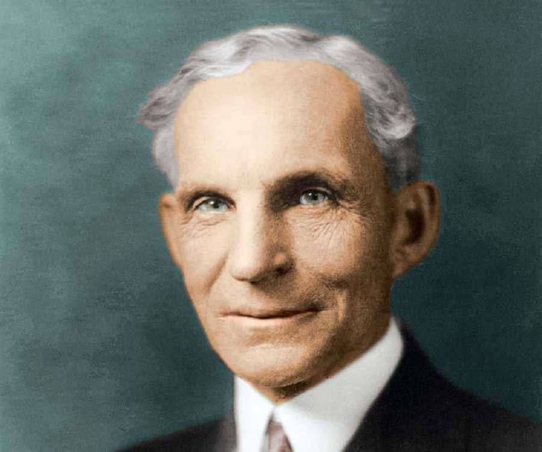
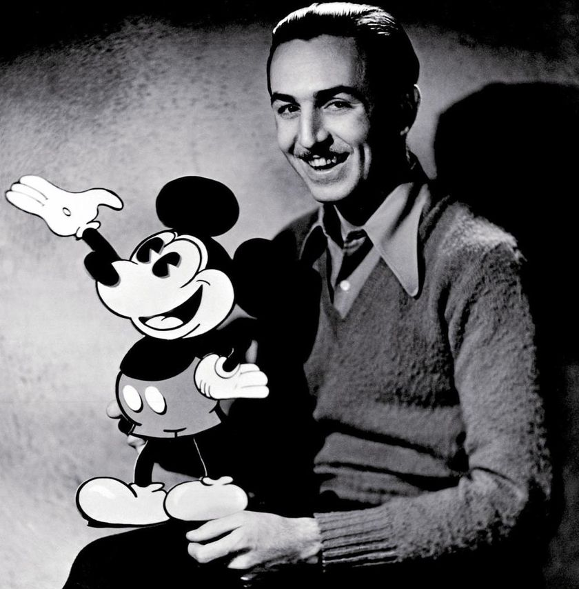
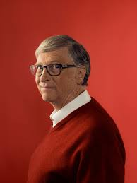
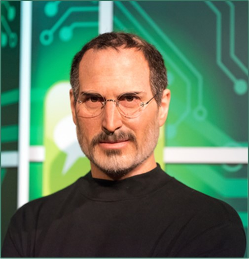

John D. Rockefeller was the richest man in history by most measures. He made his fortune by squeezing out efficiencies through horizontal and vertical integrations that made Standard Oil synonymous with monopoly–but also dropped the price of fuel drastically for the everyday consumer. The government broke up Standard Oil for good in 1911.
Rockefeller's wealth soared as kerosene and gasoline grew in importance, and he became the richest person in the country, controlling 90% of all oil in the United States at his peak. Oil was used throughout the country as a light source until the introduction of electricity, and as a fuel after the invention of the automobile. Furthermore, Rockefeller gained enormous influence over the railroad industry which transported his oil around the country. Standard Oil was the first great business trust in the United States. Rockefeller revolutionized the petroleum industry and, through corporate and technological innovations, was instrumental in both widely disseminating and drastically reducing the production cost of oil.
Rockefeller's hand can still be seen in the companies like Exxon (XOM) and Conoco that profited from the R&D and infrastructure they received as their piece of the breakup. Rockefeller retired at the turn of the century and devoted the rest of his life to philanthropy. More than 80 years after his death, Rockefeller remains one of the great figures of Wall Street.
#2 Henry Ford
 A painting of Henry Ford
Henry Ford did not invent the automobile. He was one of a group working on motorcars and, arguably, not even the best of them. However, these competitors were selling their cars for a price that made the car a luxury of the rich. Ford put America–not just the rich–on wheels, and unleashed the power of mass production. His Ford Model T was the first car to cater to most Americans. Ford's progressive labor policies and his constant drive to make each car better, faster, and cheaper made certain that his workers and everyday Americans would think Ford (F) when they shopped for a car.
His introduction of the Ford Model T automobile revolutionized transportation and American industry. As the Ford Motor Company owner, he became one of the richest and best-known people in the world. He is credited with "Fordism": mass production of inexpensive goods coupled with high wages for workers.
Ford had a global vision, with consumerism as the key to peace. His intense commitment to systematically lowering costs resulted in many technical and business innovations, including a franchise system that put dealerships throughout North America and major cities on six continents. Ford left most of his vast wealth to the Ford Foundation and arranged for his family to permanently control it.
#3 Walt Disney
 Photography of Walt Disney
The 1920s found Walt Disney on the verge of creating a cultural juggernaut. A gifted animator for an advertising company, Disney began creating his own animated shorts in a studio garage. Disney created a character inspired by the mice that roamed his office, Mickey Mouse, and made him the hero of "Steamboat Willie" in 1928.
The commercial success of Mickey Mouse allowed Disney to create a cartoon factory with teams of animators, musicians, and artists. Disney turned that mouse into several amusement parks, feature-length animations, and a merchandising bonanza. After his death, the growth has continued making Disney (DIS), and his mouse, the founders of the largest media company on earth.
#4 Bill Gates
 Bill Gates
Gates was born and raised in Seattle, Washington. In 1975, he co-founded Microsoft with childhood friend Paul Allen in Albuquerque, New Mexico. It became the world's largest personal computer software company. Gates led the company as chairman and CEO until stepping down as CEO in January 2000, succeeded by Steve Ballmer, but he remained chairman of the board of directors and became chief software architect. During the late 1990s, he was criticized for his business tactics, which have been considered anti-competitive. This opinion has been upheld by numerous court rulings. In June 2008, Gates transitioned to a part-time role at Microsoft and full-time work at the Bill & Melinda Gates Foundation, the private charitable foundation he and his wife, Melinda Gates, established in 2000. He stepped down as chairman of the board of Microsoft in February 2014 and assumed a new post as technology adviser to support the newly appointed CEO Satya Nadella. In March 2020, Gates left his board positions at Microsoft and Berkshire Hathaway to focus on his philanthropic efforts including climate change, global health and development, and education.
When people describe Bill Gates, they usually come up with "rich", "competitive" and "smart." Of the three traits, it's Gates' competitive nature that has carved out his fortune. Not only did he fight and win the operating system (OS) and internet browser wars, but Gates stored up the profits that came with the victories–and Microsoft's dominance–to fund future fights and ventures. The Xbox is just one of the many sideline businesses that the massive war chest has funded. The fact is that Microsoft's cash and Gates' reluctance to pay it out is a big part of what saw the company through hard times and funded expansion in good times.
#5 Steve Jobs
 Steve Jobs
Steve Jobs co-founded Apple (AAPL), one of the only tech companies to offer a significant challenge to Microsoft's dominance. In contrast to Gates' methodical expansion, Jobs' influence on Apple was one of creative bursts. Apple was a computer company when Jobs returned to it. Now, the iPod, the iPhone, and the iPad are the engines of growth that have pushed Apple past the once unassailable Microsoft. In 2010, Apple surpassed Microsoft's market cap for the first time. As of 2019, there are more than 500 million Apple customers worldwide.
Jobs became CEO of Apple in 1997, following his company's acquisition of NeXT. He was largely responsible for helping revive Apple, which had been on the verge of bankruptcy. He worked closely with designer Jony Ive to develop a line of products that had larger cultural ramifications, beginning in 1997 with the "Think different" advertising campaign and leading to the iMac, iTunes, iTunes Store, Apple Store, iPod, iPhone, App Store, and the iPad.
In 2001, the original Mac OS was replaced with the completely new Mac OS X (now known as macOS), based on NeXT's NeXTSTEP platform, giving the OS a modern Unix-based foundation for the first time. Jobs was diagnosed with a pancreatic neuroendocrine tumor in 2003. He died of respiratory arrest related to the tumor at age 56 on October 5, 2011.
The Bottom Line
These five entrepreneurs succeeded by giving the customer something better, faster, and cheaper than their nearest competitors. No doubt, some like Rockefeller will always be on these lists, but there is plenty of room for the right person to find their place among the entrepreneur's pantheon.